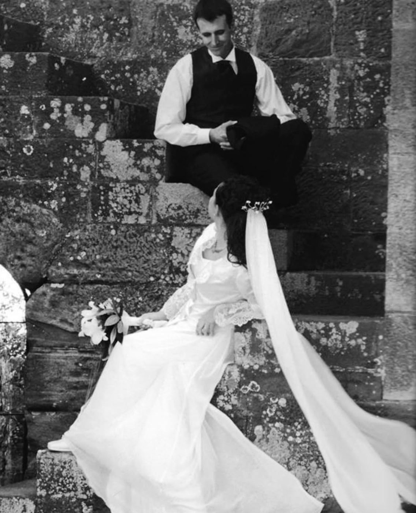
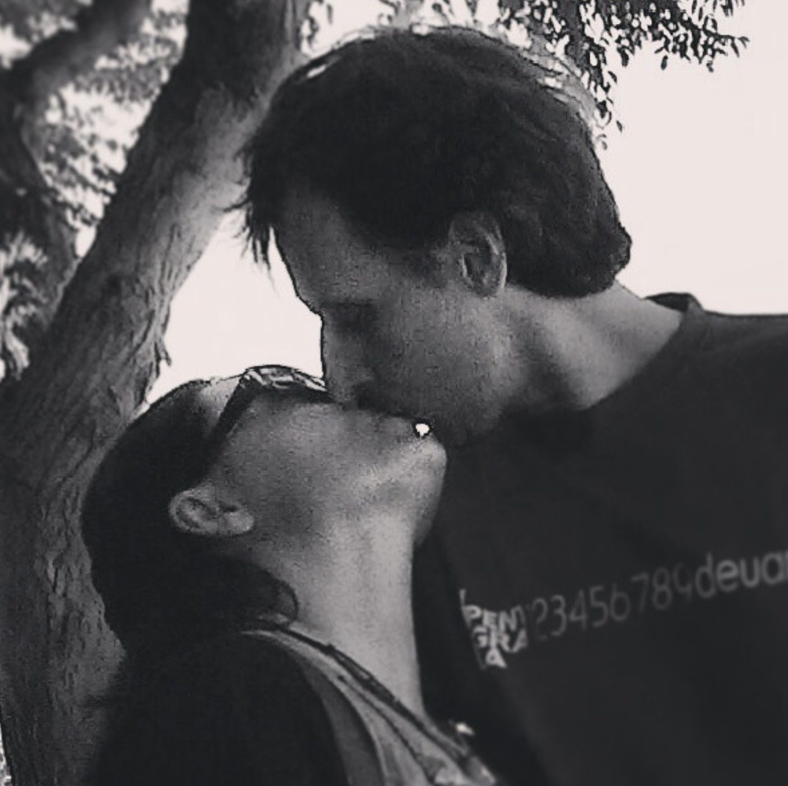
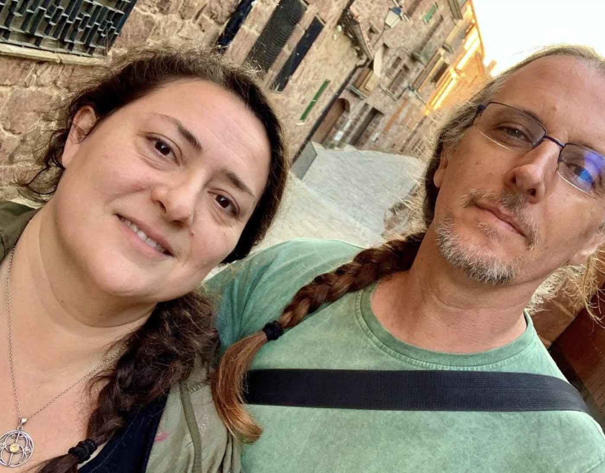

25
anys · noces de plata
Fa vint-i-cinc anys…

…dues persones es van asseure en una escala de pedra i es van mirar com qui ja sap que el camí serà llarg i bonic.
Vint-i-cinc anys d'arrels
que no es veuen, però ho aguanten tot.
Un tronc fet de dos,
trenat com les vostres trenes,
i unes branques que encara
busquen la llum, juntes.
Junts des de fa
9.128dies
219.072hores
100estacions
I cada un d'aquests dies ha sumat.
Abans i ara


Per molts anys més
Aquesta capsa és de fusta, com els arbres que creixen a poc a poc i aguanten els vents. Que s'hi vagin guardant els records dels propers vint-i-cinc anys.
La resta de la història… la teniu vosaltres.
Obre els vostres records❦